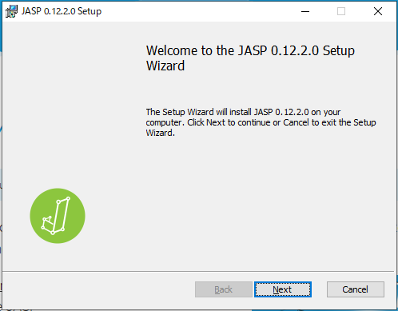

Next: 起動とデータの読み込み Up: JASPについて Previous: JASPとは
ここでは、Windows 10 にJASP（バージョン 0.12.2）をインストールすることを前提に説明を行う。 Mac版も基本的な手順は変わらないが、事前に XQuartz をインストールしておく必要がある。
まず、JASPのダウンロードページ（https://jasp-stats.org/download/）に移動する。
ここで、[JASP for Windows] をクリックすると次のような画面が出てくる。「実行」をクリックすると、インストーラのダウンロード後自動的にインストールに進める2。
インストーラを実行していれば、次のようなセットアップウィザードが立ち上がるので、[Next] をクリックする。

次にJASPのインストール先を聞かれるので、そのまま [Next] をクリック。
次の画面で [Install] をクリックすると、インストールが開始する。 「このアプリがデバイスに変更を加えることを許可しますか？」と聞かれた場合は、[はい] を選択すればよい。
次のように進行状況が表示される。
インストールが完了すると次のような画面になるので、[Finish] をクリックすると、インストールが終了してJASPが起動する。
また、スタートメニューにJASPのアイコンが登録される。
もしJASPを頻繁に利用するようなら、アイコンを右クリックして [その他]
 [タスクバーにピン留めする] を選択することで、アプリケーションのショートカットがタスクバーに登録される。
[タスクバーにピン留めする] を選択することで、アプリケーションのショートカットがタスクバーに登録される。
Taichi Okumura